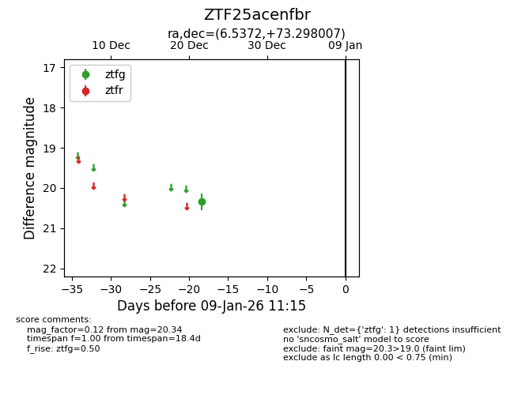
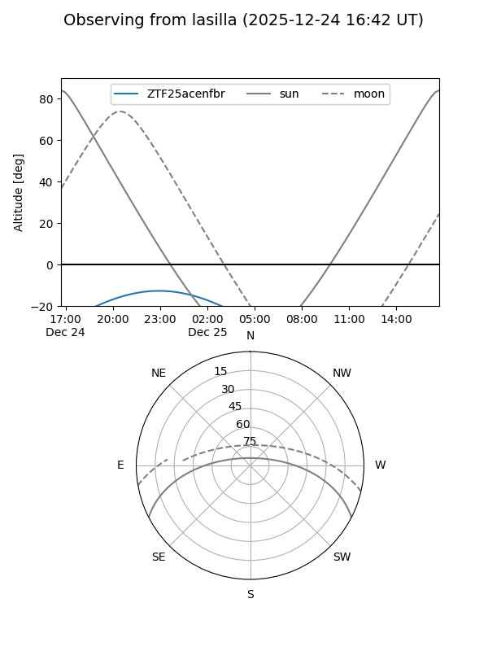
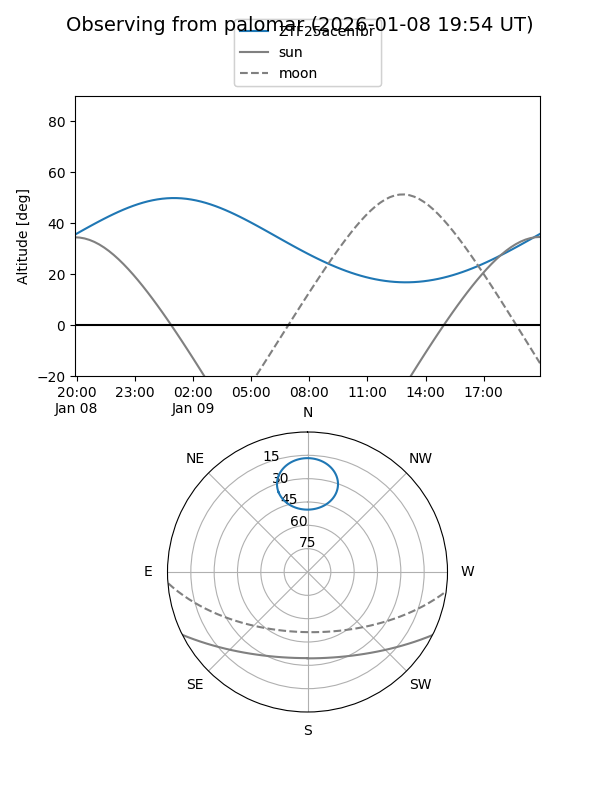

ZTF25acenfbr
Target ZTF25acenfbr at 2025-12-24 16:17
Aliases and brokers:
FINK: fink-portal.org/ZTF25acenfbr
Lasair: lasair-ztf.lsst.ac.uk/objects/ZTF25acenfbr
ALeRCE: alerce.online/object/ZTF25acenfbr
alt names
ZTF25acenfbr (ztf,fink_ztf)
Coordinates:
equatorial (ra, dec) = 6.5372,+73.29801
equatorial (HMS+DMS) = 00:26:08.94,+73:17:52.82
galactic (l, b) = (121.0873,+10.51690)
Flags:
Photometry:
last ztfg=20.34
1 ztfg detections
Lightcurve

Visibility


Additional plots